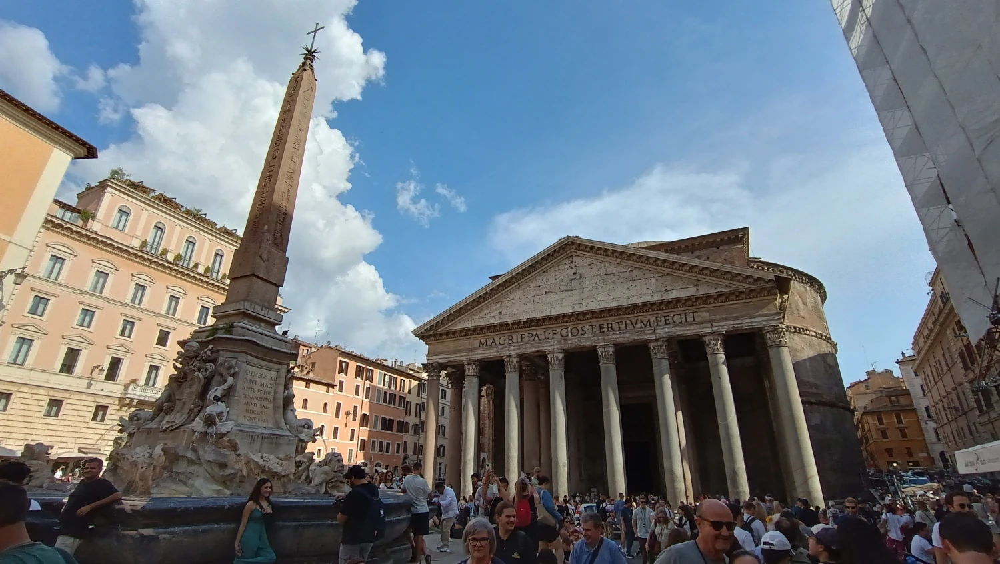
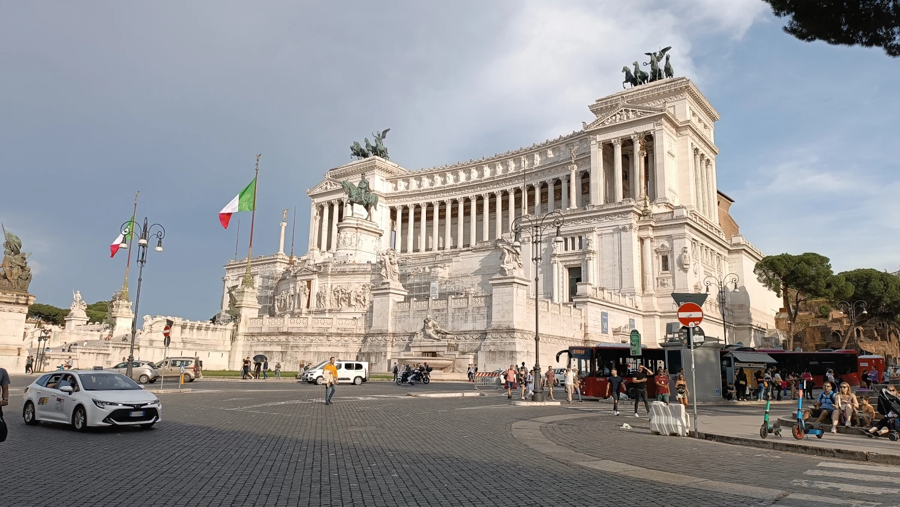
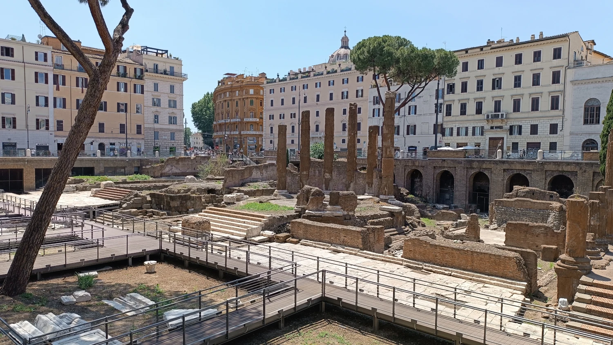
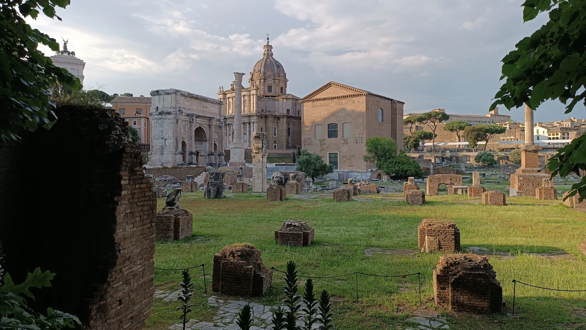
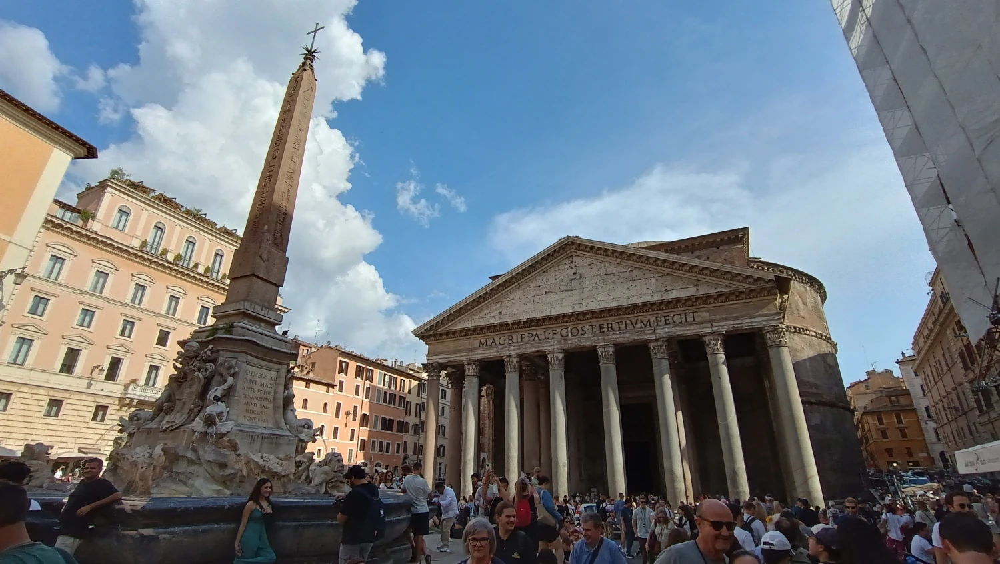
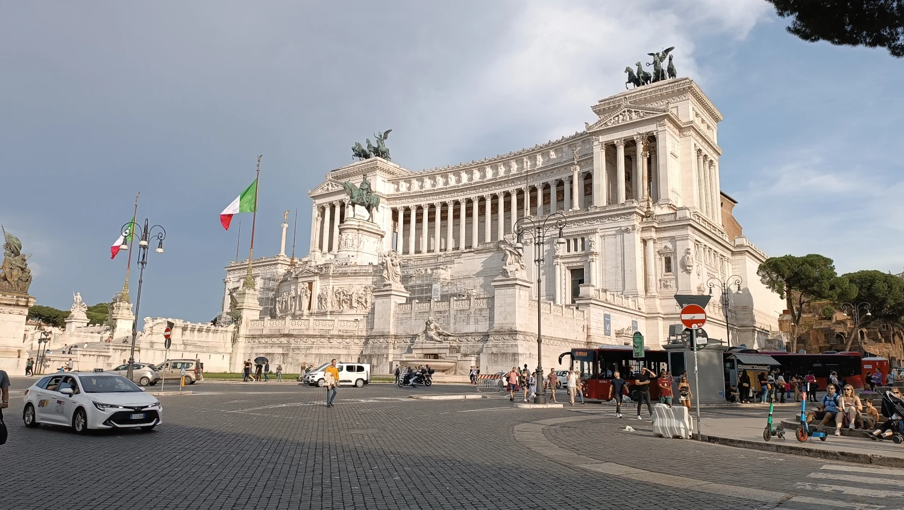
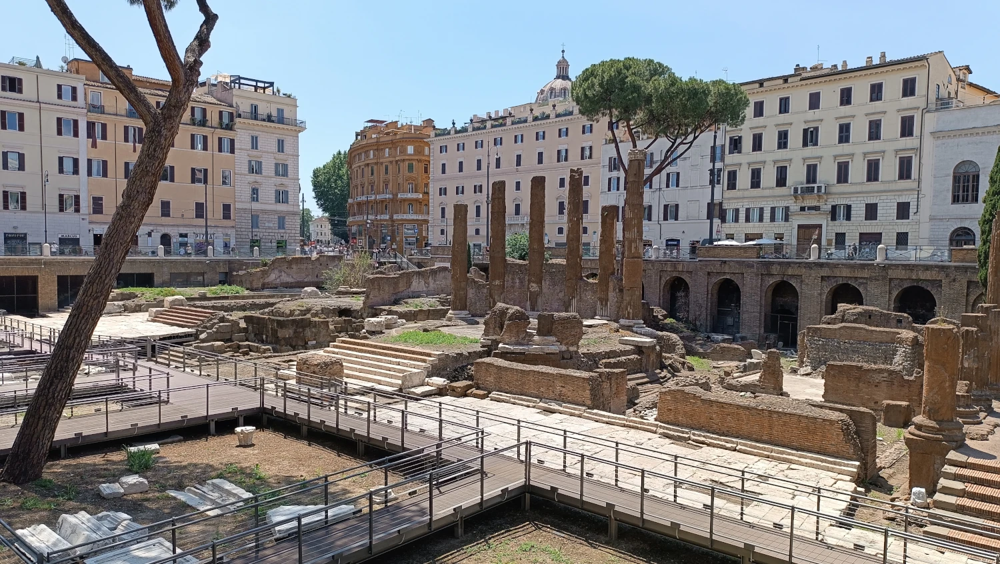
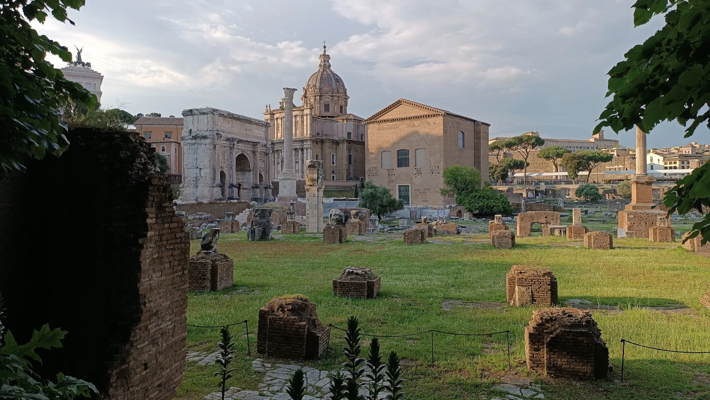

Itálie – země umění, historie a výborného jídla
Florencie, Řím, Vatikán, Neapol, Pompeje, Benátky
Jely jsme se společností CK EMMA, která měla skvěle připravený turistický plán zahrnující všechna místa, která jsme chtěly navštívit.
Navštívily jsme ikonická místa jako Řím, Florencii, Benátky, Neapol, Pompeje a také Vatikán. Během cesty jsme měly možnost nasát italskou kulturu a poznat běžný život Italů.
I když jsme jeli do Itálie a po ní cestovali autobusem, rozhodně toho nelituji.
Bydleli jsme nedaleko Říma a z tohoto výchozího bodu jsme hvězdicovitě vyráželi na výlety po celé Itálii.
Itálie zblízka
Jedna věc mě během naší cesty po Itálii trochu zamrzela – a to, kolik egyptských obelisků je vystavených v Římě i jinde. Samozřejmě – jde o historii, výbojné časy a ukázku moci, ale dnes se člověk neubrání myšlence, že to je vlastně kulturní dědictví, které bylo „vypůjčeno“ bez svolení původní země. Z pohledu dnešních hodnot si člověk uvědomí, jak snadno si mocné říše braly cizí poklady.
🔔 Upozornění na úvod
Při cestování po Itálii si rozhodně hlídejte své osobní věci!
Na frekventovaných místech, hlavně ve větších městech jako Řím, Neapol nebo Florencie, je velké množství kapsářů. Často pracují ve skupinkách, jsou velmi nenápadní a umí odvést pozornost. Dále se může stát, že vás někdo osloví s nabídkou „pomoci“, výměny peněz nebo vám bude chtít něco dát „zdarma“ – ve skutečnosti ale očekává peníze nebo se vás snaží ošálit.
👜 Tip: Nenoste cennosti v batohu na zádech, mobil mějte raději v přední kapse a pozor na tašky otevřené směrem k ulici nebo ve veřejné dopravě.
🎭 Kultura a zvyky
Italové jsou velmi společenští a rodinně založení. Večeře s celou rodinou je samozřejmost, i u dospělých dětí. Mnoho Italů má siestu (pauzu kolem poledne), během které se obchody zavírají. Důležité jsou svátky, slavnosti a karnevaly – např. benátský karneval nebo Velikonoční procesí na jihu. Italové si zakládají na stylu a kultuře – dobře oblékaní, zdvořilí, ale přímí.
🛐 Náboženství
Itálie je tradičně katolická země. Přibližně 80 % Italů se stále hlásí k římskokatolické církvi, i když pravidelná účast na bohoslužbách klesá. Důležité svátky jako Vánoce, Velikonoce či Den všech svatých jsou stále silně prožívány. Každé město má svého patrona, jehož svátek se slaví procesími a slavnostmi. I když je Itálie sekulární stát, náboženství má hluboký kulturní vliv.
💶 Ekonomika
Itálie je 3. největší ekonomikou eurozóny. Sever země (Milán, Turín, Benátky) je průmyslový a bohatší, jih je chudší a spoléhá více na zemědělství a turistiku. Země je známá módou (Armani, Prada), automobilovým průmyslem (Fiat, Ferrari), potravinářstvím (těstoviny, víno, olivový olej) a designem. Ekonomiku brzdí vysoký státní dluh a byrokracie.
🌱 Ekologie
Itálie se v posledních letech více zaměřuje na ekologii – ve městech je důsledná separace odpadu, elektrokola a MHD. Na severu jsou časté cyklostezky a ekologické stavby, na jihu je situace složitější. Velkým problémem zůstávají sucho, znečištění vzduchu v údolí Pádu a občasné lesní požáry.
🚘 Doprava
Itálie má kvalitní síť vysokorychlostních vlaků (Frecciarossa, Italo), které spojují hlavní města. Ve městech je běžné metro (Řím, Milán, Neapol) a autobusy. Autem se jezdí hodně, ale provoz bývá chaotický – zvlášť v Neapoli nebo Palermu. V menších městech se jezdí hodně na skútrech. Dálniční síť je rozsáhlá, ale zpoplatněná.
🏠 Bydlení
Ceny nemovitostí jsou velmi rozdílné – v Římě, Miláně nebo Benátkách je bydlení velmi drahé. Naopak v menších městech nebo na jihu jsou ceny nižší. Mnoho Italů bydlí s rodiči do pozdního věku, někdy i po třicítce, což je kulturně běžné a není stigmatizováno. Pronájem je běžný hlavně mezi mladými nebo turisty.
🎓 Školství
Povinná školní docházka trvá od 6 do 16 let. Školní systém je centrálně řízený, státní školy jsou zdarma. Existují ale i soukromé a církevní školy. Vysoké školství je tradičně silné – univerzita v Bologni (1088) je nejstarší v Evropě. Mnoho studentů se po škole potýká s nezaměstnaností, a proto někteří volí práci v zahraničí.
👵 Důchody
Italský důchodový systém je průběžný a poměrně štědrý, ale zároveň zatížený stárnutím populace. Průměrný věk odchodu do důchodu je kolem 67 let. Důchodci tvoří významnou část obyvatel, a italská společnost je vůči seniorům velmi rodinně orientovaná – často žijí více generací pod jednou střechou.
🏥 Zdravotnictví
Státní zdravotní péče (SSN) je kvalitní a většinou bezplatná, hrazená z daní. Zdravotní systém ale trpí nerovnoměrným rozložením – sever má moderní nemocnice a dostupnou péči, na jihu je systém slabší. Lidé často využívají i soukromé kliniky na drobnější zákroky kvůli kratším čekacím dobám.
🪙 Chudoba a zaměstnanost
Na jihu je míra nezaměstnanosti vyšší – především mezi mladými lidmi. Existují i chudší regiony (Kalábrie, Sicílie), kde lidé často pracují neformálně. V posledních letech se vláda snaží o podporu zaměstnanosti a přilákání investic do těchto oblastí.
🍝 Italská kuchyně
- Pizza Margherita – z Neapole, jednoduchá a dokonalá
- Těstoviny (pasta) – spaghetti, tagliatelle, lasagne, ravioli… každá oblast má svůj druh
- Risotto alla milanese – se šafránem
- Gelato – italská zmrzlina, jemnější a méně tučná než ta česká
- Espresso a cappuccino – Italové nikdy nepijí cappuccino po 11. dopoledne
- Panettone – vánoční sladký chléb
- Tiramisu – slavný dezert z mascarpone, kávy a piškotů
Italové jedí večeři pozdě (často až v 8–9 večer), jídlo je společenský rituál a nikdy nespěchají.
Benátky – město na vodě
Benátky jsou jako ze sna – romantické, křehké, úplně jiné. Gondoly, kanály, mosty a tiché večery, kdy uslyšíš jen šplouchání vody. Přes den je to ale turistická smršť. Pokud chceš zažít klidné Benátky, vydej se brzy ráno nebo pozdě večer.
Náměstí sv. Marka, Dóžecí palác, barevné ostrovy Murano a Burano – to všechno stojí za to vidět.
Co určitě nevynechat:
- Náměstí sv. Marka (Piazza San Marco) – srdce Benátek
- Bazilika sv. Marka – mozaiky, zlato a byzantská nádhera
- Dóžecí palác (Palazzo Ducale) – sídlo dávné vlády, nádherná gotická architektura
- Most vzdechů (Ponte dei Sospiri) – romantický i smutný, spojoval soudní síň s vězením
- Canal Grande – hlavní vodní tepna města
- Ostrov Murano – slavné sklářství, dílny i muzea
- Ostrov Burano – malované domky, krajky a klid mimo centrum
Zajímavost: V Benátkách je více než 400 mostů, a téměř žádná auta. Město je kompletně bez dopravy na kolech.
Tip: Vyhni se předraženým kavárnám na náměstí sv. Marka – účtují si i za hudbu. Klidně se projdi pár uliček dál, najdeš levnější a autentičtější místa.
Florencie – kolébka renesance
Florencie je ráj pro milovníky umění, architektury a romantiky. Město, kde tvořili Michelangelo, Leonardo da Vinci nebo Botticelli. Domy z růžového kamene, galerie Uffizi, socha Davida, most Ponte Vecchio – to všechno má duši.
Ale největší kouzlo má Florencie při západu slunce. Sednout si na vyhlídku Piazzale Michelangelo a dívat se na město pod sebou je zážitek, který tě dojme.
Co určitě nevynechat:
- Galerie Uffizi – Botticelli, da Vinci, Michelangelo – umění v každém rohu
- Katedrála Santa Maria del Fiore (Duomo) – nádherná kupole od Brunelleschiho
- Ponte Vecchio – starý most s obchůdky a výhledy na řeku Arno
- Socha Davida (Galleria dell’Accademia) – slavné dílo Michelangela naživo
- Piazzale Michelangelo – nejkrásnější výhled na celé město
- Palazzo Vecchio – historická radnice s věží
- Bazilika Santa Croce – místo posledního odpočinku Galilea, Michelangela i Machiavelliho
Milovníci Hannibala pozor – Florencie je přesně to místo, kde se vám budou vracet známé scény a temná elegance tohoto „gurmána“.
Zajímavost: Florencie jako první město v Evropě zavedlo papírové peníze (během vlády Medicejských).
Tip: Pokud chceš navštívit slavné galerie, rezervuj si vstupenky předem – fronty bývají extrémní.
Řím – Věčné město
Řím je místo, kde na tebe dýchne historie doslova na každém kroku. Koloseum, Forum Romanum, Pantheon, fontána di Trevi – všechno tu působí velkolepě a přitom velmi reálně. Nemusíš být milovník dějin, abys cítila ten respekt k minulosti.
Procházka večerním Římem má úplně jinou atmosféru než ruch přes den. Tisíce lidí, žongléři, vůně pizzy a gelata, ale i ticho v postranních uličkách s tajemným šarmem.
Co určitě nevynechat:
- Koloseum – největší amfiteátr antického světa, symbol Říma
- Forum Romanum – srdce starověkého města, plné ruin a slávy
- Pantheon – chrám s dechberoucí kupolí, vstup zdarma
- Fontána di Trevi – hoď minci a prý se do Říma vrátíš
- Španělské schody – ikonické místo pro odpočinek i fotku
- Andělský hrad (Castel Sant’Angelo) – krásný výhled a historie v jednom
- Piazza Navona – barokní náměstí s fontánami a kavárnami
Zajímavost: Řím má přes 900 kostelů a je domovem první univerzity světa zaměřené na mezinárodní právo – La Sapienza.
Tip: Dejte si pozor na předražené jídlo u hlavních památek. A taky – nenechte si „vnutit“ náramek nebo růži, často to končí nepříjemným nátlakem na zaplacení.
 







Vatikán – duchovní srdce světa
Vatikán je malý jen rozlohou. Co do vlivu, historie a významu, patří k nejsilnějším místům na světě. Bazilika sv. Petra je monumentální a návštěva Sixtinské kaple je dechberoucí zážitek – nejen kvůli Michelangelově stropu, ale i tichu a úctě, které tam panují. Ovšem i tam můžete slyšet křičet hlídače „no photo“.
Zajímavé je pozorovat kontrast – náboženský svět za zdí Vatikánu a běžný ruch v římských ulicích hned za rohem.
Chystáte se do tohoto státu ve státě? Připravte se na to, že si na vstup možná pěkně dlouho počkáte – klidně i hodinu na rozpáleném náměstí. Ale jakmile se tam dostanete, zástava srdce je zaručena. Architektura a výzdoba vám vyrazí dech.
Co určitě nevynechat:
- Bazilika sv. Petra – monumentální chrám, vstup zdarma, ale výstup na kopuli stojí za to
- Sixtinská kaple – Michelangelův strop je mistrovské dílo světového umění
- Vatikánská muzea – jedno z největších muzeí na světě, minimálně 2–3 hodiny času
- Náměstí sv. Petra – hlavní shromaždiště s ikonickým výhledem a kolonádami
- Gardská výměna – barevné uniformy švýcarské gardy potěší i oko fotografa
Zajímavost: Vatikán má vlastní armádu – Švýcarskou gardu – a vydává své vlastní eurové mince, které jsou mezi sběrateli velmi cenné.
Tip: Oblečte se vhodně – při vstupu do baziliky a kaple platí přísná pravidla ohledně oblečení (zakrytá ramena, žádné krátké sukně nebo kraťasy).
Neapol – pravá Itálie
Neapol miluješ, nebo ji nechápeš. Je hlučná, živá, trochu špinavá a chaotická – ale přitom plná života, upřímnosti a skvělé kuchyně. Právě tady vznikla pravá pizza Margherita.
Město leží přímo pod sopkou Vesuv, což mu dodává trochu napětí – ale i silnou historii a energii.
Co určitě nevynechat:
- Castel dell’Ovo – hrad na moři s krásným výhledem
- Napolské podzemí (Napoli Sotterranea) – prohlídky starých tunelů a vodních cest
- Katedrála sv. Januaria (Duomo di San Gennaro) – patron města, slavná ampule s krví
- Via dei Tribunali – ulice plná pizzerií, lidí a života
- Národní archeologické muzeum – top místo pro milovníky antiky a Pompejí
- Hrad Castel Nuovo (Maschio Angioino) – středověký symbol Neapole
- Lungomare – nábřežní promenáda s výhledem na Vesuv
Zajímavost: Neapol je jedním z nejstarších trvale osídlených měst v Evropě – jeho historie sahá přes 3 000 let zpátky.
Tip: Drž se turistických čtvrtí a buď opatrná ve večerních hodinách, hlavně v přístavní oblasti.
Pompeje – město zastavené v čase
Pompeje jsou fascinující a zároveň mrazivé místo. Celé antické město, pohřbené erupcí Vesuvu v roce 79 n. l., je zachovalé v neuvěřitelných detailech – ulice, domy, mozaiky, a dokonce i otisky těl lidí, kteří nestihli utéct.
Procházka mezi ruinami ti umožní nahlédnout do každodenního života římské civilizace. A ten kontrast s dnešní realitou je opravdu silný.
Tady ani nebudu vypisovat, co byste neměli vynechat – protože tady prostě musíte vidět úplně všechno. A počítejte s tím, že čtyři hodiny rozhodně stačit nebudou.
Zajímavost: Díky vrstvě popela, která město zakryla, se zachovaly i nástěnné malby a předměty, které by jinak dávno zanikly.
Tip: Vezmi si vodu, klobouk a pohodlné boty – areál je rozlehlý, bez stínu a v létě hodně rozpálený.